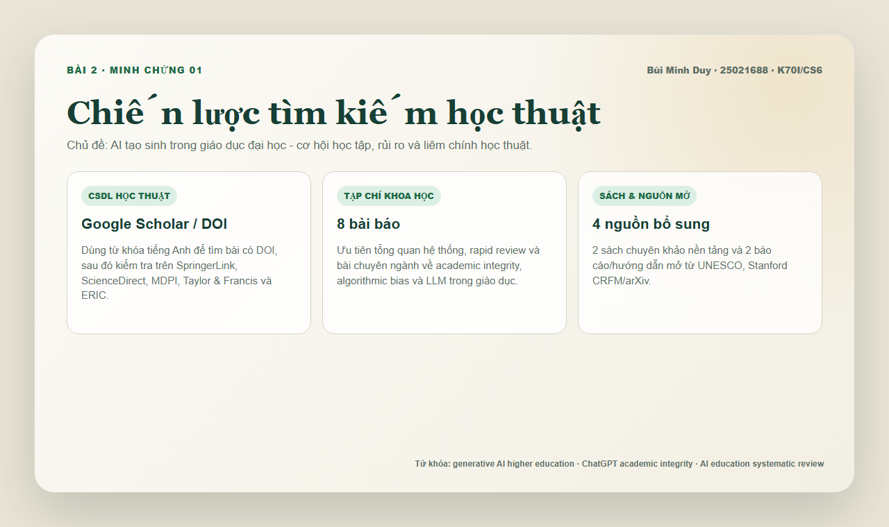
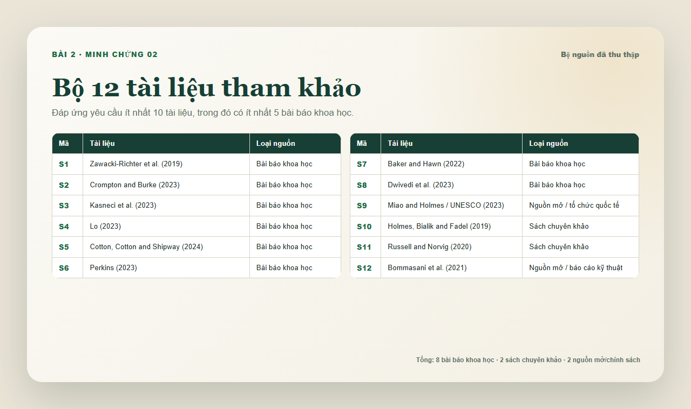
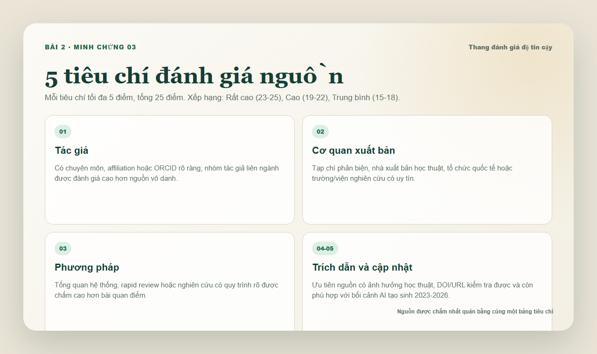
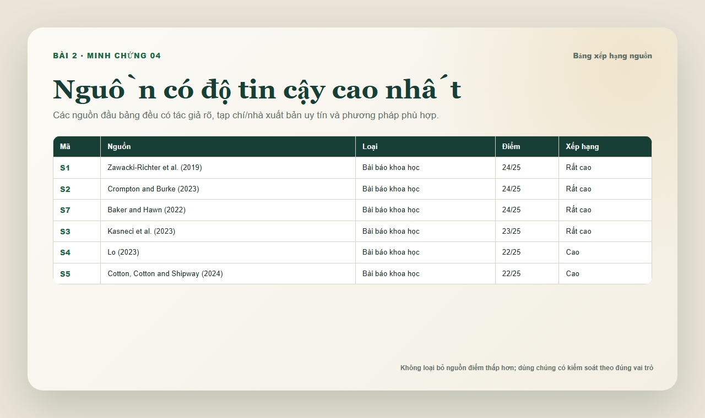
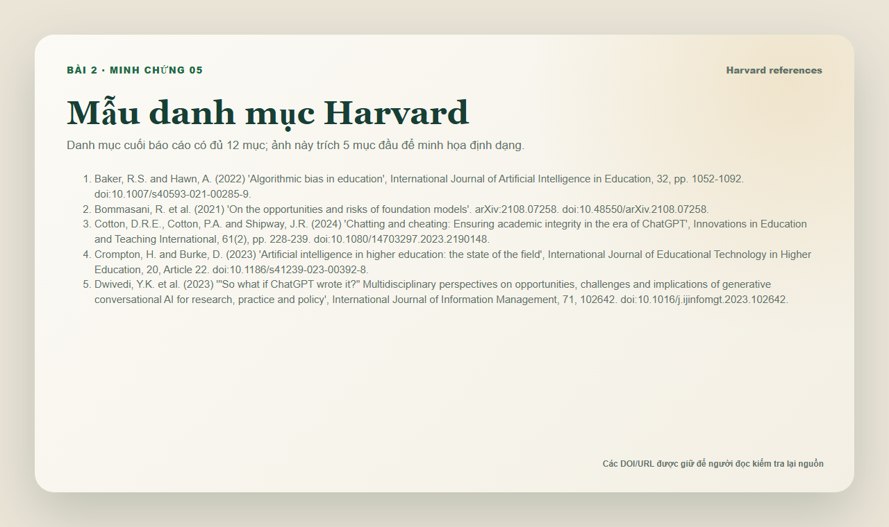
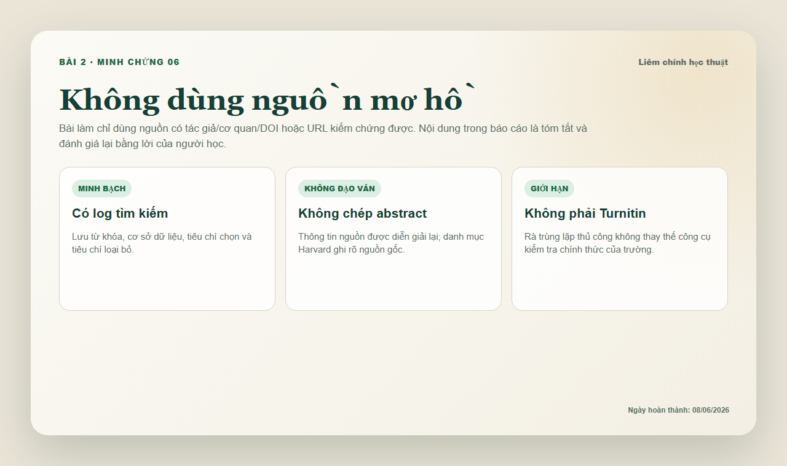

Chủ đề rõ phạm vi
AI tạo sinh trong giáo dục đại học, tập trung vào học tập, rủi ro và liêm chính học thuật.
Bài tập 2 · Portfolio cá nhân
Chủ đề nghiên cứu là AI tạo sinh trong giáo dục đại học. Bài làm thu thập 12 tài liệu từ cơ sở dữ liệu học thuật, tạp chí khoa học, sách chuyên khảo và nguồn mở uy tín, sau đó đánh giá độ tin cậy theo tác giả, nhà xuất bản, phương pháp, ảnh hưởng trích dẫn và tính cập nhật.
01 / Tổng quan
Bài làm có đủ 4 nhóm nguồn, hơn 10 tài liệu tham khảo, ít nhất 5 bài báo khoa học, bảng đánh giá độ tin cậy và danh mục Harvard.
AI tạo sinh trong giáo dục đại học, tập trung vào học tập, rủi ro và liêm chính học thuật.
8 bài báo khoa học, 2 sách chuyên khảo và 2 nguồn mở/chính sách có cơ quan rõ ràng.
Chấm từng nguồn theo 5 tiêu chí: tác giả, xuất bản, phương pháp, trích dẫn và cập nhật.
PDF/DOCX có bảng tổng hợp, phân tích độ tin cậy và danh mục tài liệu Harvard.
02 / Bảng nguồn
“AI tạo sinh trong giáo dục đại học: cơ hội học tập, rủi ro kỹ thuật - đạo đức và liêm chính học thuật.”
03 / Minh chứng
Ảnh minh chứng ghi lại chiến lược tìm kiếm, bộ nguồn, thang đánh giá, bảng xếp hạng, mẫu Harvard và ghi chú liêm chính.






04 / Nhận xét
Những bài như Zawacki-Richter và Crompton & Burke có độ tin cậy cao vì tổng hợp nhiều nghiên cứu với tiêu chí chọn rõ.
Các bài 2023-2024 về ChatGPT giúp phản ánh bối cảnh AI tạo sinh, nhưng cần đọc cùng nguồn nền tảng để tránh kết luận vội.
UNESCO hữu ích cho nguyên tắc triển khai và đạo đức, nhưng không thay thế bằng chứng thực nghiệm từ tạp chí khoa học.
06 / Liêm chính học thuật
Nội dung Bài 2 được viết mới dựa trên nguồn đã kiểm tra ngày 08/06/2026. Bài không sao chép abstract hoặc đoạn văn từ nguồn; các ý chính được tóm tắt, so sánh và đánh giá lại bằng lời của người học.
Phần rà trùng lặp là kiểm tra thủ công các cụm câu đại diện, không phải báo cáo Turnitin. DOI/URL được giữ trong danh mục Harvard để người đọc có thể kiểm tra lại nguồn gốc.